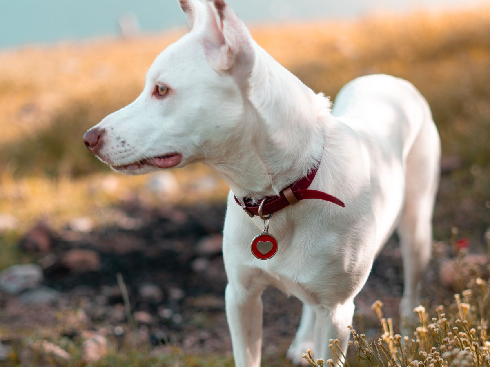
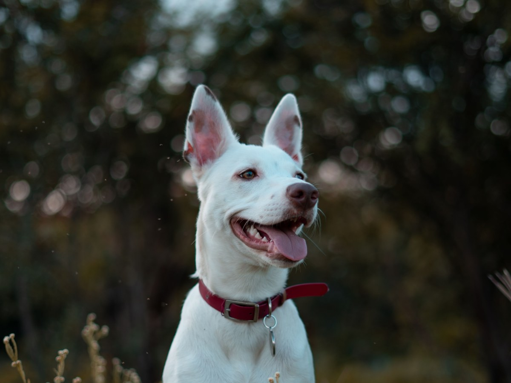
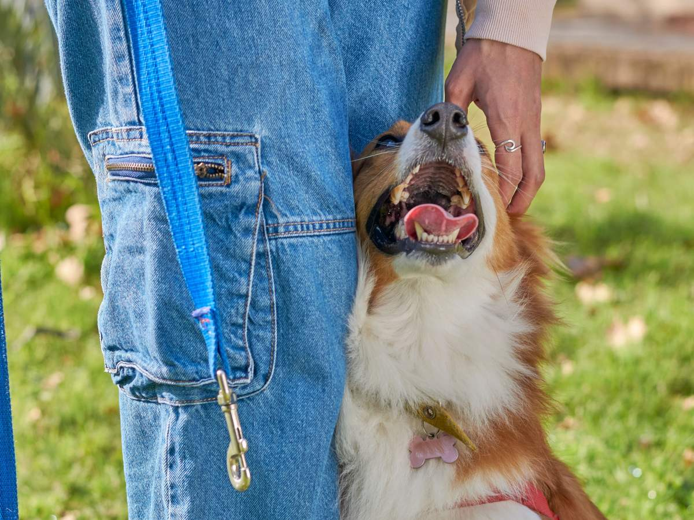
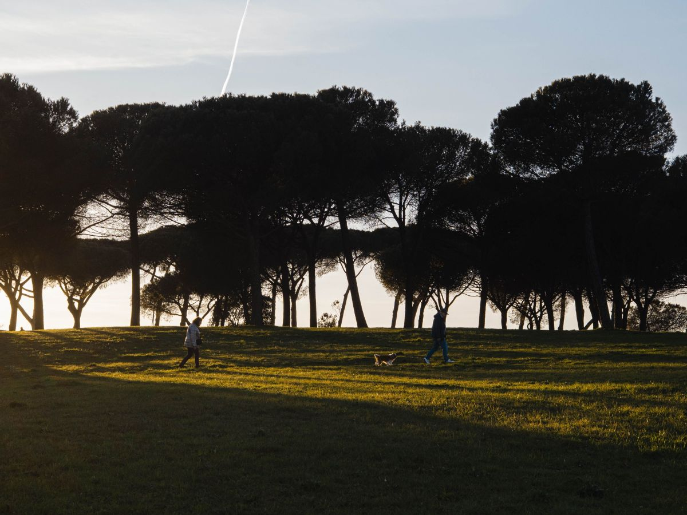
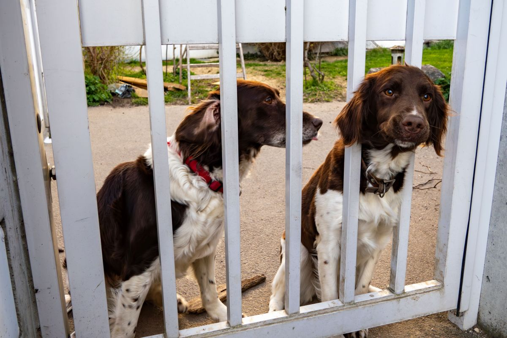
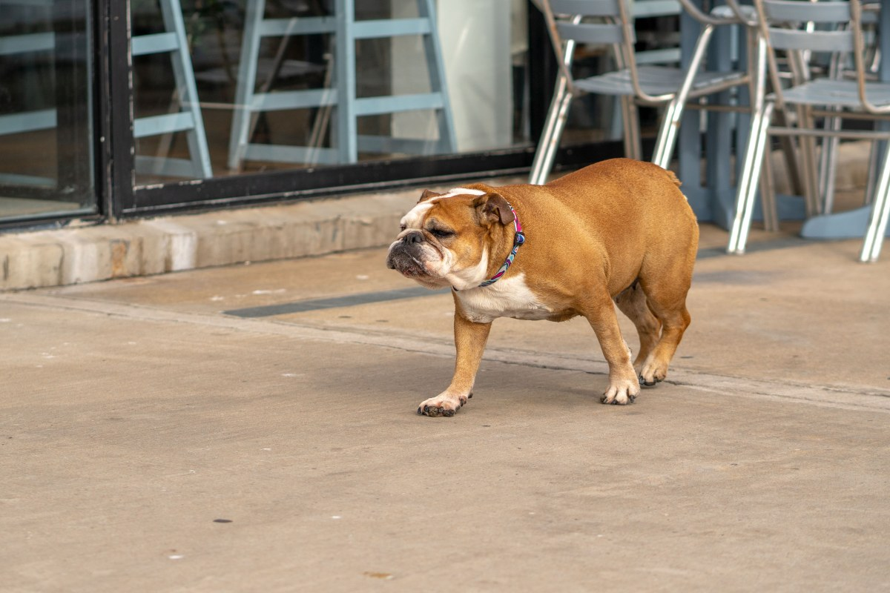
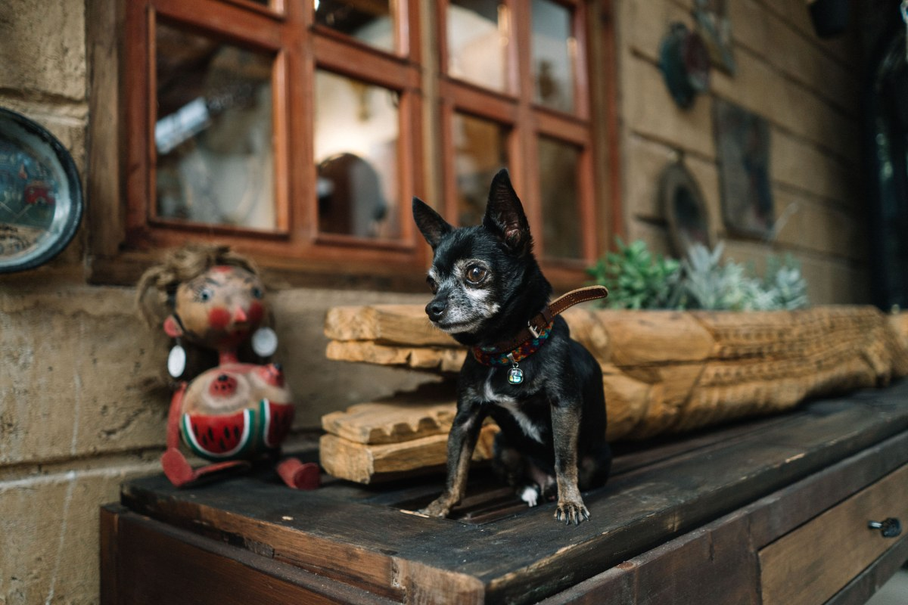
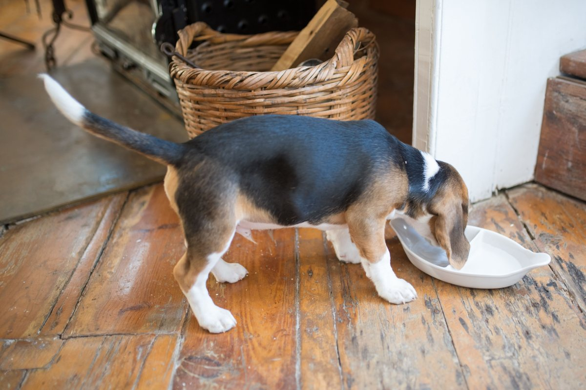
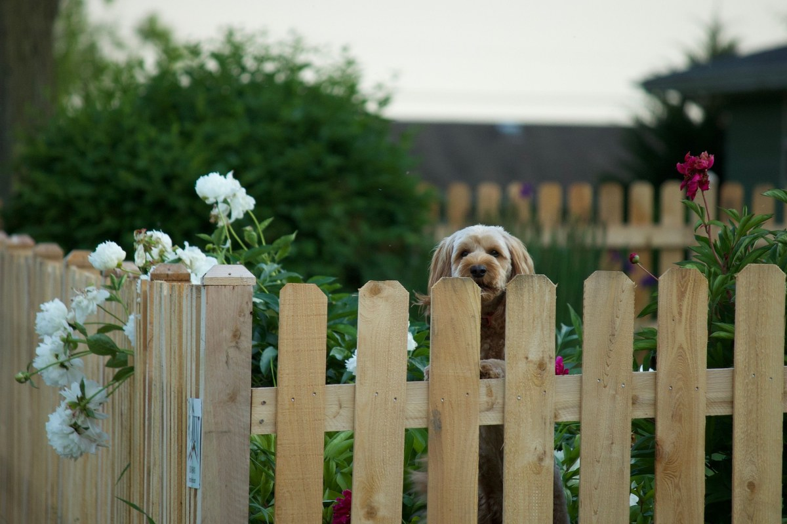
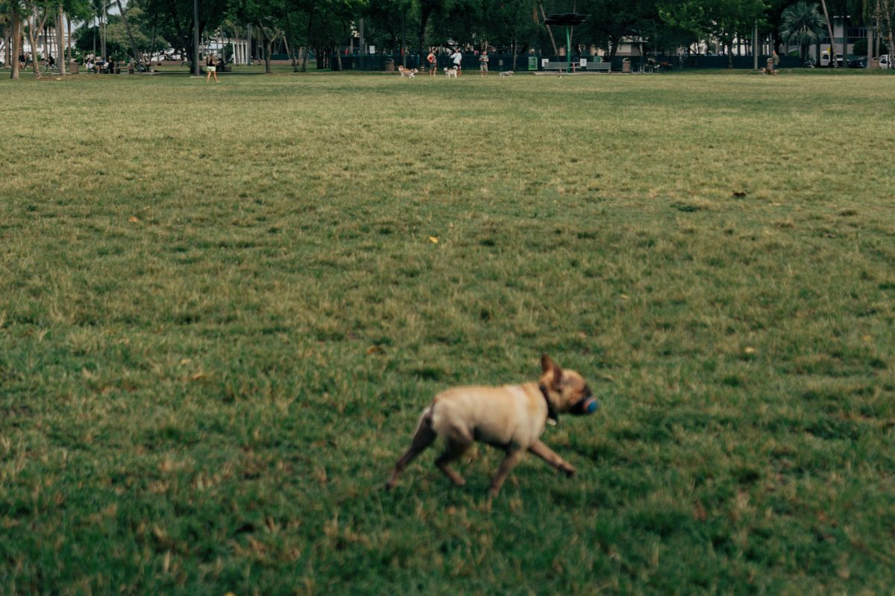

- 135reseñas en Google
- 4,5de promedio
- 5días, de martes a sábado
- 0páginas que carguen: su dominio no contesta
Encontré uno en la calle
Un perro ajeno en tu reja: qué hacer
Acércate con calma
De lado, sin mirarlo fijo.
Mira el collar
Una placa con teléfono resuelve todo.
Tráelo a leer el chip
Pregunta antes si lo leen y si tiene costo.
Busca al dueño
Registro Nacional de Mascotas y avisos del barrio.
Si está herido
Ya es una consulta: escribe antes de venir.
Qué no hacer
No darle remedios ni bañarlo si está herido.
Pasos generales; si leen chip y el costo, se confirma por WhatsApp.
Todos tienen una casa a la que volver.
Qué atiende
Una clínica de barrio
-
Consulta
Diagnóstico
«Fue asertivo», cuenta una reseña.
-

Chip
Lectura
Pregunta si la hacen.
-

Vacunas
Al día
Pregunta cuáles tienen.
-
Recuperación
Después de la consulta
Pregunta si hospitalizan.
-

Trato
Cercano
«Doctores muy cercanos», dice otra.
-

Etapas difíciles
Con honestidad
«Consciente y realista», cuentan.
Chip, vacunas y recuperación son de ejemplo; lo demás sale de sus reseñas.
«Es un centro veterinario limpio y los doctores son muy cercanos con nuestras mascotas».
Una reseña de Google
El barrio
Collar, correa y plaza






Fotos de referencia: ninguna es de la clínica.
Dónde está
Ejército Libertador 3886, Puente Alto
- +56 9 6596 8265
- Martes a sábado
- 10:30–20:00
- Lunes y domingo
- Cerrado
El lunes está cerrado: si encuentras uno ese día, escribe igual.
Ejército Libertador 3886 Abrir en Google Maps
Para la Veterinaria San Gabriel
Qué es real y qué falta
Lo verificado
Dirección, WhatsApp, horario, el 4,5 con 135 reseñas y lo que cuentan, al 14-09-2026.
Lo de ejemplo
Si leen chip, los servicios que sus reseñas no nombran y las fotos.
Lo que falta
Que su página cargue: veterinariasangabriel.cl es suyo desde el 07-07-2025 y hoy no responde.